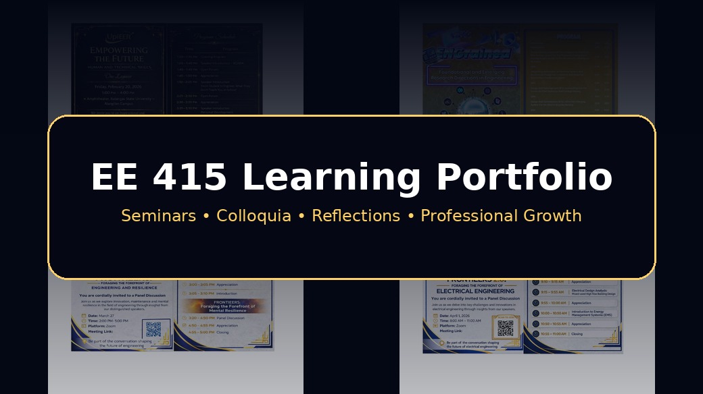

From Seminars
to Practice
This learning portfolio presents my journey through the EE 417 seminars and colloquia. It consolidates the knowledge, skills, insights, applications, and supporting evidence I gained from events focused on electrical engineering innovation, sustainability, automation, power management, resilience, research, and professional growth.

Purpose of the Portfolio
This portfolio serves as a centralized record of the seminars and colloquia attended throughout the semester, highlighting technical knowledge, personal insights, and professional growth.
Knowledge Gained
The seminars strengthened my understanding of SCADA, voltage drop, PLCs, power systems, energy management, automation, renewable energy, smart systems, and electrical design.
Skills Developed
The colloquia helped me develop critical thinking, technical listening, reflection writing, communication, research appreciation, and the ability to connect theory with practical design.
Professional Growth
The experience helped me understand that engineering requires not only technical competence, but also ethics, resilience, teamwork, safety awareness, and social responsibility.
Open Each Event Page
Each event is presented on a dedicated page with its overview, key learnings, reflection, application, and documentation.

UplEEft
Empowering the Future: Human and Technical Skills

ENGrained
Foundational and Emerging Research Directions in Engineering

FrontiEErs
Engineering Maintenance, Operation, and Resilience

FrontiEErs 2.0
Electrical Design, Voltage Drop, and EMS

Elecsynapse
Electrical Engineering Innovation and Emerging Technologies

EUREEKA
Innovating Ideas to Electrical Engineering Research

NIKOLAS
Next-Generation Innovators Electrical Engineering Systems

EEHIVE
Electrical Engineering Innovators Conference 2026